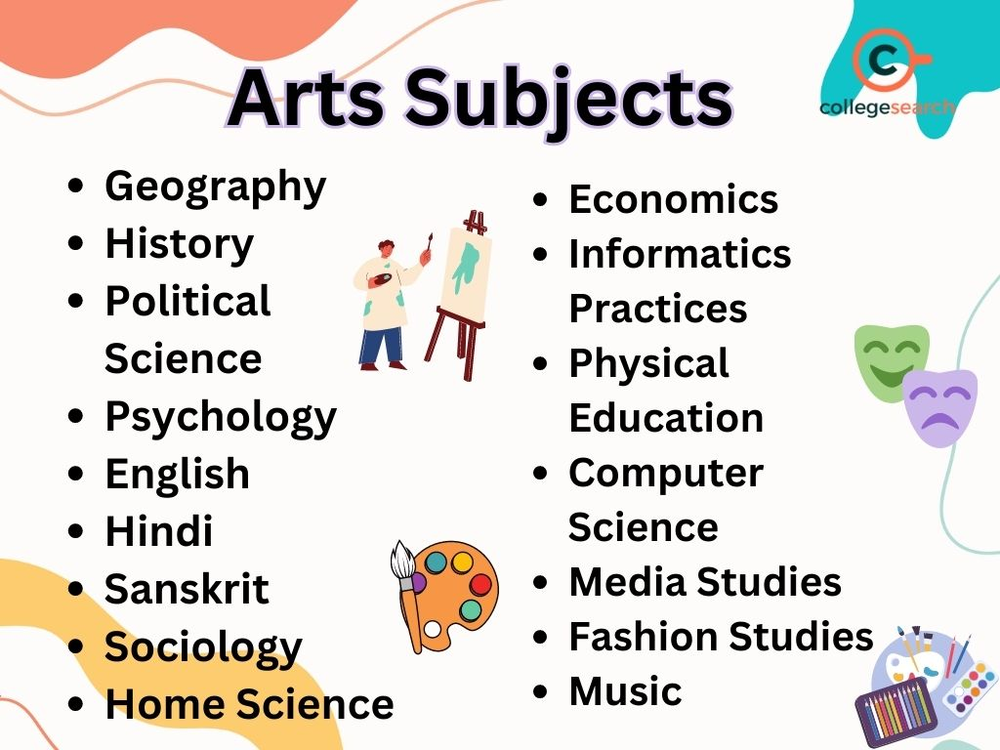

Arts Stream
About the Arts Stream
The Arts stream offers subjects like History, Political Science, Sociology, and Psychology, ideal for careers in law, teaching, media, and social services.
Arts Stream: Unlock Your Creative Potential
The Arts stream is a perfect fit for students who are passionate about creativity, culture, and the study of society. Whether you love literature, enjoy exploring history, or want to dive into philosophy and sociology, the Arts stream provides diverse opportunities for intellectual growth and career advancement.
Key Subjects in Arts Stream
Literature: Literature is the study of written works, ranging from classical texts to contemporary literature. It fosters critical thinking, creativity, and a deeper understanding of language and culture. Students explore poetry, novels, and plays, and develop their communication skills through reading and writing.
History: History is the study of past events, people, and civilizations. It helps students understand how historical events shape the present. Through history, students develop analytical and research skills, while learning about different cultures, conflicts, and the evolution of societies.
Geography: Geography explores the physical features of the earth and the relationship between people and their environment. It covers topics like landforms, climate, and human geography, equipping students with knowledge about global issues such as climate change, urbanization, and sustainability.
Psychology: Psychology delves into human behavior, mental processes, and emotions. It helps students understand how the brain works, why people act the way they do, and how social and environmental factors influence behavior. It's ideal for those interested in helping others or pursuing a career in counseling or therapy.
Political Science: Political Science examines political systems, governance, and international relations. Students study the structures of government, the role of laws, and the impact of policies on society. It is a great foundation for students interested in careers in law, diplomacy, or public policy.
Sociology: Sociology is the study of society and social behavior. It helps students understand how individuals and groups interact and how societies function. Sociology explores topics like social inequality, culture, family, education, and more, making it a good choice for students interested in social justice or community work.
Philosophy: Philosophy encourages critical thinking about the big questions of existence, knowledge, ethics, and logic. Students explore various schools of thought and engage in deep intellectual discussions. Philosophy sharpens problem-solving skills and is perfect for those who enjoy abstract thinking and debate.
Fine Arts: Fine Arts encompasses the study of visual and performing arts, including painting, sculpture, music, dance, and theater. It allows students to express their creativity and develop their artistic talents. Students may pursue careers as artists, designers, musicians, or actors.
Performing Arts: Performing Arts is a field that includes music, dance, and theater. It allows students to explore different forms of expression through performance. Whether it's acting, dancing, or playing an instrument, this field provides an opportunity to showcase talent and pursue careers in entertainment and media.
Journalism and Mass Communication: Journalism and Mass Communication cover writing, editing, broadcasting, and digital media. Students learn how to communicate effectively through various media channels, including print, television, and online platforms. This field opens up career opportunities in media, public relations, and content creation.
Career Opportunities in the Arts Stream
The Arts stream opens a wide variety of career paths. Some of the most popular career options include:
Teaching and Academia: With a degree in Arts, you can become a teacher or professor in schools, colleges, or universities. Teaching subjects like literature, history, political science, or psychology allows you to inspire and educate future generations. Additionally, you could pursue higher studies and contribute to research and academia.
Media and Journalism: The media industry is vast, and Arts students can take up roles in journalism, editing, content creation, and public relations. Journalists research and report on current events, while content creators focus on digital platforms. The increasing demand for online news and content makes this an exciting career field.
Writing and Publishing: With strong writing skills, Arts students can pursue careers as writers, poets, editors, or content creators. This includes writing books, articles, blogs, or working in publishing houses. Many Arts graduates also work as copywriters, bloggers, or freelance writers in various fields.
Social Work: Arts students can get involved in social work and community service. Whether working with NGOs, in counseling, or as part of government programs, a background in sociology or psychology is beneficial. Careers in social work focus on improving people's lives and addressing social issues like poverty, mental health, and education.
Benefits of Choosing Arts Stream
Diverse Career Paths: The Arts stream offers a vast array of career opportunities. From creative arts to social sciences, there’s something for every student, and the flexibility allows for exploration across fields.
Creative Expression: For students passionate about expressing themselves creatively, the Arts stream provides a platform for artistic exploration, whether it's through writing, painting, acting, or performing arts.
Social Impact: Many careers within the Arts stream have the potential for significant social impact. Whether in education, social work, or public policy, students in this field can contribute to making a positive difference in society.
Intellectual Development: The Arts stream encourages critical thinking, problem-solving, and intellectual curiosity. It nurtures your ability to analyze complex ideas, express your thoughts clearly, and consider diverse perspectives.
How to Achieve Your Goals
- Identify your interest areas and focus on relevant subjects.
- Engage in extracurricular activities like debate, writing, or theater.
- Pursue higher education or certifications in chosen fields.
Future Jobs and Opportunities
- Law: Lawyer, Legal Advisor.
- Media: Journalist, Content Creator.
- Social Services: Social Worker, NGO Professional.